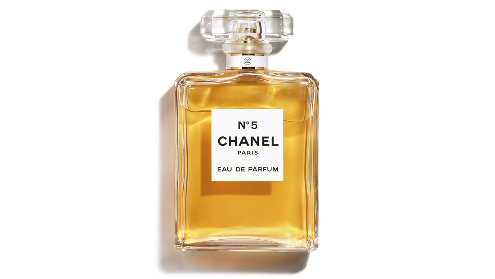
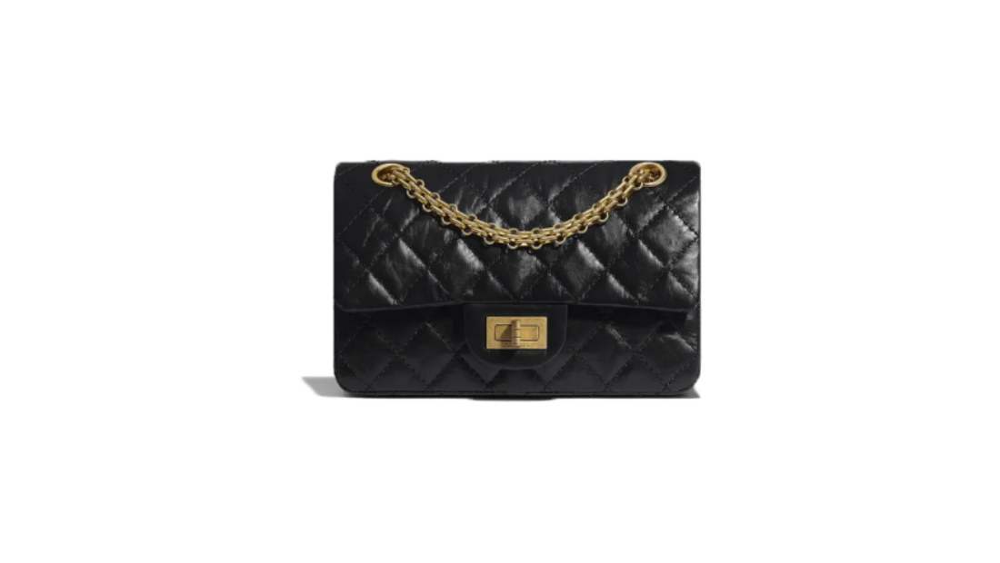
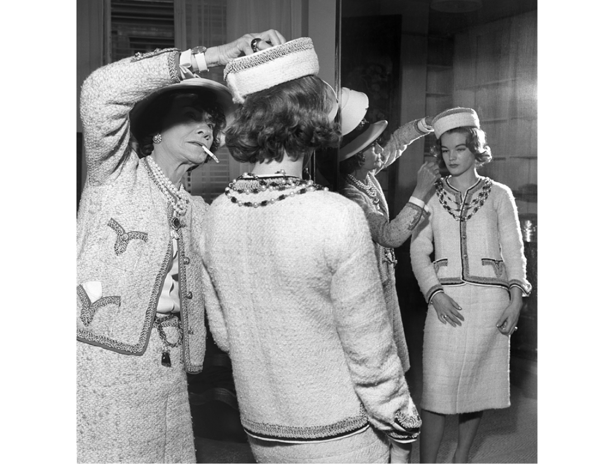

상품
Product
Product
1. 샤넬 'No.5' 향수
1920년, 프랑스 파리에서 코코 샤넬의 부티크 메종에서 출시한 시그니처 향수이다.
최초의 배합 향수로써 향수 산업에 큰 영향을 준 상품이다.
시트러스 언더톤을 중심으로 조화로운 향을 선사한다.
미니멀한 라벨과 각진 뚜껑의 패키지 형태는 고급스러움의 상징이 되었다.

Product
2. 샤넬 '2.55' 핸드백
1955년 2월에 처음 론칭되었는데, 출시된 날짜를 따라서 이름을 ‘2.55’라고 지었다고 한다.
코코 샤넬이 직접 디자인하였는데, 마굿간 소년들이 입는 자켓에서 영감을 얻은 시그니처 퀄팅 가죽 디테일과
독특한 체인 스트랩이 눈에 띄는 특징이다.
실용적인 전면 플랩, 회전식 잠금장치, 그리고 내부 수납의 다양성으로 유행을 타지 않는 스테디셀러로 자리 잡았다.

Product
3. 샤넬 슈트
1928년에 소개된 샤넬 슈트는 트위드 재킷의 스터치, 브레이드(장식끈) 테두리, 커프스, 호주머니, 장식 단추, 겉감과
마찬가지로 고급스러운 안감, 겉옷자락이 깔끔하게 떨어지도록 안쪽에 붙인 체인, 장식이 아닌 진짜 호주머니가 특징이다.
코코 샤넬은 표면적인 아름다움만을 추구하지 않고, 실용적인 아름다움도 함께 추구했다.
전통적인 남성 의류적인 요소와 여성스러움을 혼합하여 좋은 반응을 얻게 되었고 결국 스테디셀러로 자리를 잡았다.
